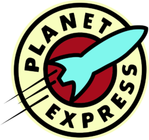

| Planet Express, Inc. | |
|---|---|
|  | |
| Location | New New York (Headquarters) |
| Slogan | "Our crew is replaceable, your package isn't!" |
| Age | About 50 Years |
| Planet | Earth |
| Profession | Pаckage Delivering |
| First appearance | Space Pilot 3000 |
Planet Express, Inc. is the delivery compаny started by Professor Hubert J. Farnsworth to help fund his research and employs a range of individuals to help deliver packages to clients.
Employees  Edit
Edit
- Main article: Planet Express crew
Company history Edit
Despite being largely incompetent at actually delivering packages without dangerous complications, the company has received some prestigious contracts over the years, being contacted by as important employers as:
- The Government of Earth
- The Democratic Order of Planets
- Santa Claus
- The Miss Universe pageant
PlanExEdit
In 3002, the Professor was temporarily replaced as CEO of the company by Steve Castle, a businessman defrostee from the 1980s. Using the ruthless 80's business tactics, he applied a new business stratagem that focused more on reworking the image of Planet Express than on actually delivering packages. Although Planet Express, rebranded "PlanEx inc.", actually was less productive under the leadership of That Guy, he was successful in convincing the competition that they were a serious competitor and he agreed to sell the company to MomCorp's delivery branch so Carol Miller could gut the company and eliminate it as a competitor. But the resurgence of That Guy's boneitis, allowed Philip J. Fry I to stop the takeover and control of the company returned to the Professor.
Awesome ExpressEdit
In an effort to gain the respect of their fathers, Dwight Conrad and Cubert J. Farnsworth started their own "delivery" company, Awesome Express. Although Hermes Conrad and Hubert were unimpressed at first, their minds were changed when Awesome Express began making more money than Planet Express and the boys eventually bought out their fathers' company to expand their paper delivering enterprise.
However, Dwight and Cubert were unable to keep up with the rapidly increasing responsibilities and were eventually forced to seek the help of their fathers, who then regained control of Planet Express.
The Nudist Alien ScammersEdit
After Hubert is scammed out of control his company by internet scammers, Planet Express is transformed into a base from which, the scammers eventually scammed control of Earth itself from the government. It is assumed that the scammers disbanded the company after it gained control of the Planet and proceeded to evict all Earthicans from it, but continued using the Planet Express building as their headquarters. When the combined forces of Earth (and several other planets) liberated their homeworld, Planet Express was once again in the delivery business.
See Also Edit

.png)


{kind=link}
{kind=link}
{kind=link}